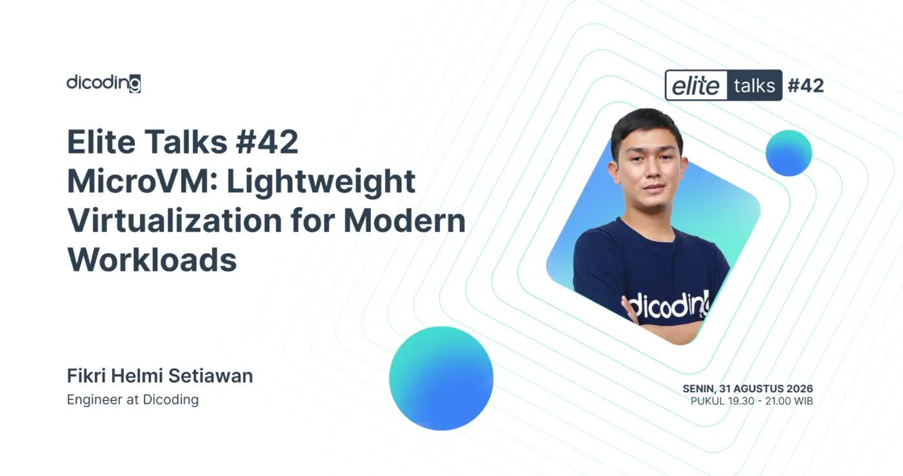
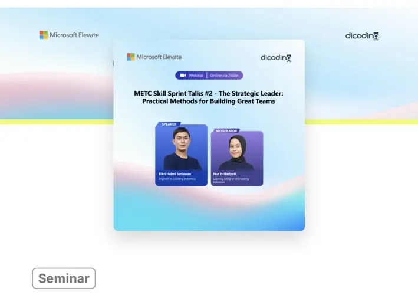

Reliable systems
Designing observable, automated, and scalable systems across on-premise, hybrid-cloud, and learning environments.
Engineer · Educator · Systems builder
Fikri Helmi Setiawan is a technology professional focused on infrastructure, Cloud & DevOps, software development, AI, automation, and technical education.
The bigger picture
My work sits at the intersection of reliable infrastructure, practical software, AI-enabled workflows, and learning experiences that help people move forward.
Designing observable, automated, and scalable systems across on-premise, hybrid-cloud, and learning environments.
Developing curricula, hands-on learning experiences, and training for students, university learners, and working professionals.
Speaking, moderating, and creating developer coaching content about Cloud, DevOps, backend engineering, and AI.
Selected work
Selected work across infrastructure, software development, AI, automation, and learning platforms.
Dicoding Indonesia
Built a sandbox environment for students to learn and practice safely, with infrastructure designed to support repeatable hands-on learning experiences.
Pijak Career Fair
Built an AI-powered CV analysis automation for a career fair workflow, processing hundreds of candidate records and helping streamline candidate assessment preparation.
Google Student Ambassador
Built an automation system to validate social media submissions and check Twibbon participation, handling up to 80,000 records with automated status updates and exception handling.
Dicoding Indonesia
Built a platform to aggregate and manage WhatsApp Business workflows, bringing operational communication into a more consistent system.
Dicoding Indonesia
Built a headless monitoring agent using Playwright to audit restricted and instructor-led learning sessions in real time, with automated reporting for operational follow-up.
Dicoding Indonesia
Built high-throughput Docker-based automation for Linux System Administration assessments, helping make technical evaluation repeatable and scalable.
Additional projects
Learning programs
Experience
Leading architecture, automation, and reliability for on-premise and hybrid-cloud infrastructure supporting engineering and AI projects. Building scalable, self-healing systems and comprehensive observability.
Designing curricula, learning materials, hands-on exercises, and delivering training for students, university learners, and working professionals.
Ensured the quality of technical curricula for Cloud Computing, DevOps, Data Science, and AI while leading curriculum development and career growth initiatives.
Coordinated the development of AI-focused learning content under the supervision of the Chief Learning Officer.
Created technical course content and learning modules for cloud platforms including AWS and Azure, and served as a Master Trainer for Cloud and DevOps programs.
Handled Tier-1 technical support, incident management, information retrieval, and customer experience operations for high-volume services.
Supported network engineering work during an internship, building an early foundation in infrastructure and connectivity.
Speaking & community
Speaker · PyCon ID 2026 · August 2026
Shared practical lessons from building a scalable submission assessment workflow for an e-learning platform, including automation design, validation, reliability, and handling large volumes of submissions.
Speaker · Build with AI Surabaya · May 2026
Trainer · Google Bangkit Bersama AI · November 2025
Speaker · Baparekraf Developer Day, Yogyakarta · October 2024
Moderator · Baparekraf Developer Day, Yogyakarta · March 2024

Speaker · Elite Talks #42 · August 2026

Speaker · METC Skill Sprint Talks #2 · September 2026
Skills & capabilities
Topics taught and shared
Cloud Computing · DevOps · AWS · Google Cloud · Backend Engineering · Linux · Networking · AI · Software Development
Through curriculum development, instructor and master trainer roles, developer coaching, and community events.
Credentials
Leadership Competencies Development Program
Gemini Certified Educator
AI Infrastructure and Operations
Professional Cloud Architect
SysOps Administrator — Associate
Linux Foundation Certified IT Associate
Cloud DevOps Engineer
Associate Cloud Engineer
Solutions Architect — Associate
Cloud Practitioner
Education
Bachelor's degree, Informatics · 2017 — 2021
Computer and Network Engineering · 2014 — 2017
Have a problem worth exploring?
Open to thoughtful conversations about infrastructure, software development, AI, technical education, speaking, and reliable systems.